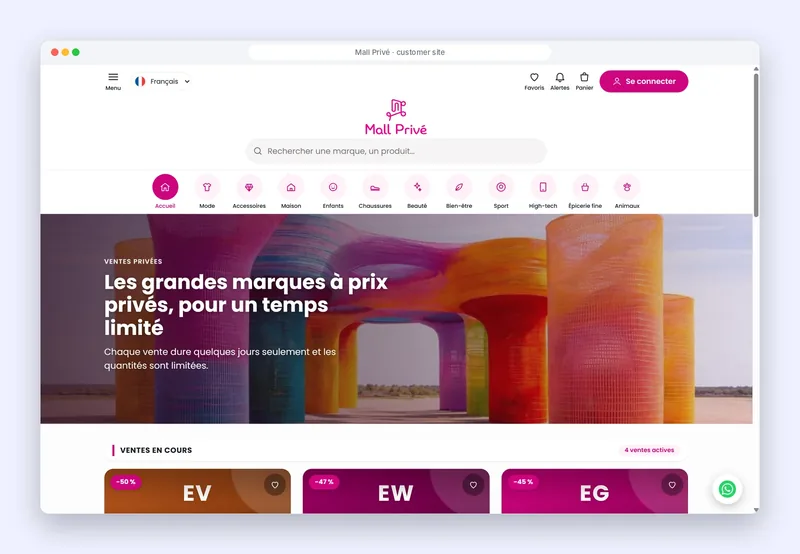
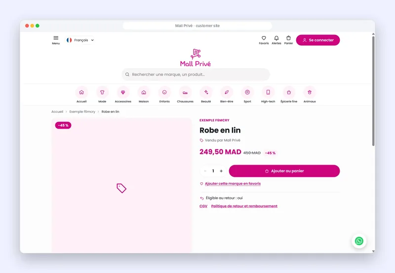
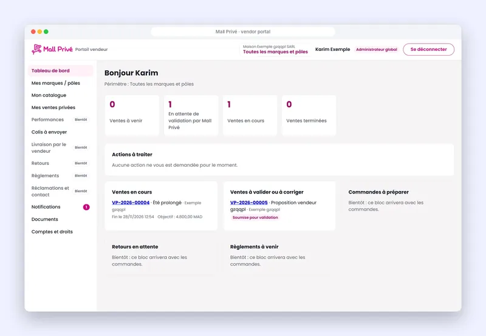
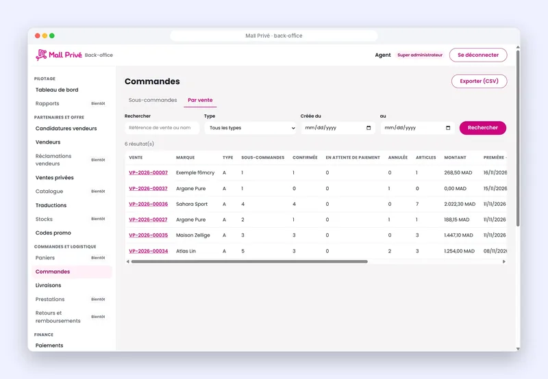
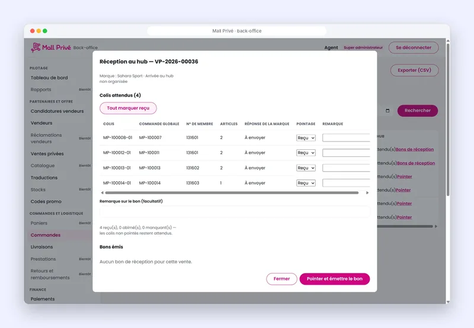
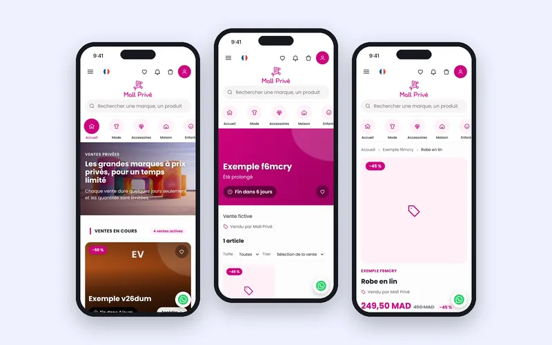
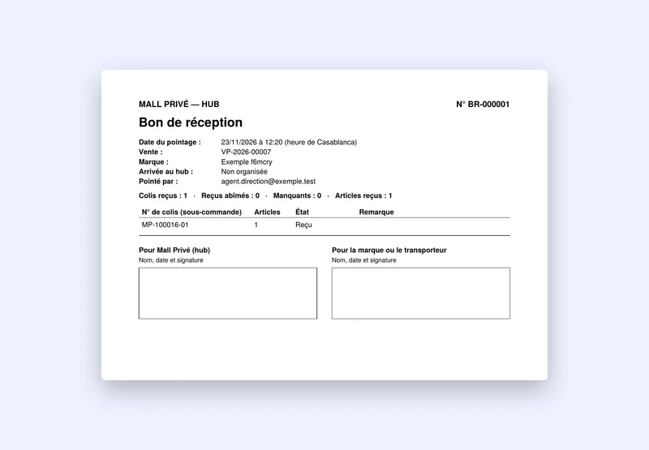

Étude de cas · Plateforme e-commerce · 2026
Mall Privé : des ventes privées de bout en bout, de la commande au colis livré.
Une plateforme marocaine qui réunit un site client, un portail pour les marques et un back-office pour l'équipe, avec paiement, préparation au hub et livraison par Chrono Diali.
- Rôle
- Ingénieur fullstack en freelance, de la conception à la livraison
- Client
- Start-up marocaine de ventes privées
- Périmètre
- Back-end, 3 front-ends, infrastructure
- Statut
- En cours de recette

Le besoin
Vendre en ligne, pendant quelques jours, les collections de marques partenaires à prix réduits. Il fallait gérer les paiements marocains (carte, paiement à la livraison), les commandes multi-marques, la réception des colis au hub, la livraison et le suivi, avec des données personnelles protégées selon la loi 09-08.
Ce que j'ai construit
- Une architecture en microservices Spring Boot reliés par Kafka
- Trois applications Angular : site client, portail vendeur, back-office
- Une connexion sécurisée Keycloak avec double facteur pour l'équipe
- L'intégration du transporteur Chrono Diali (expédition, suivi, ramassage)
- Les exports CSV et les documents PDF (bons de réception)
Le parcours d'une commande
Chaque étape a son écran et sa trace dans l'historique.
- 1Achat et paiement
- 2Commande transmise à la marque
- 3Réception et pointage au hub
- 4Préparation du colis
- 5Livraison Chrono Diali et suivi
Les écrans
Captures réalisées avec des données fictives. Voir toutes les photos et vidéos.






Choix techniques
Des outils récents et stables, choisis pour durer.
Back-end
Java 25, Spring Boot 4, PostgreSQL 18, Flyway. Événements Kafka publiés par outbox : aucun message perdu.
Front-end
Angular 22 avec signals, trois applications testées avec Vitest ; site client en français et en arabe.
Sécurité
Keycloak (3 espaces), BFF sans jeton côté navigateur, double facteur pour l'équipe, droits par rôle.
Qualité
Tests d'intégration avec Testcontainers, une branche par tâche, documentation tenue à jour.
Un projet du même type ?
Marketplace, back-office ou intégration de transporteur : parlons-en.